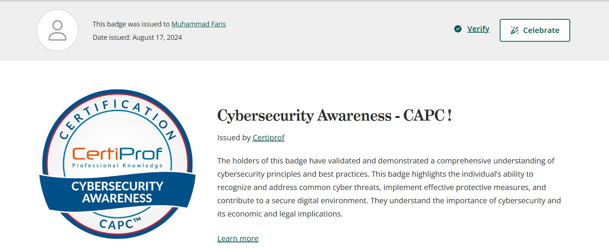
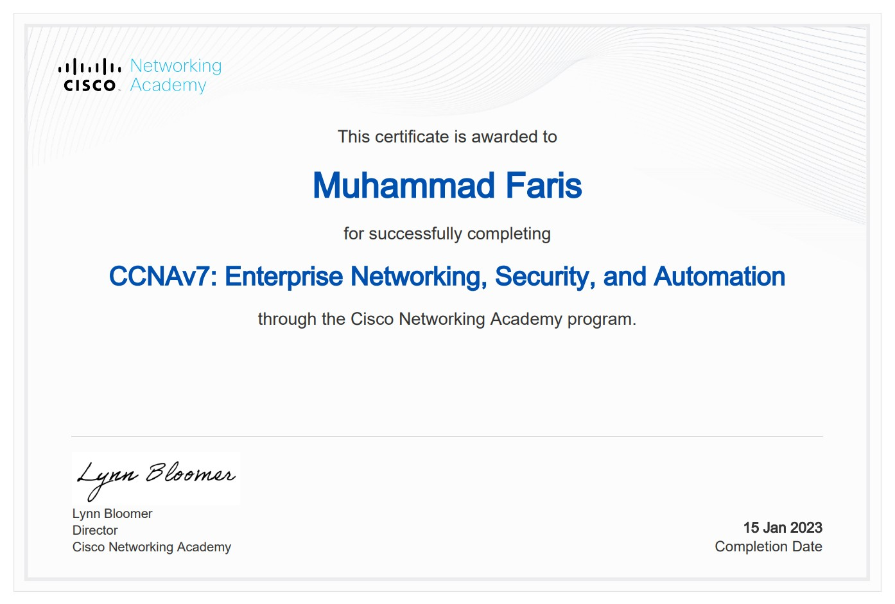
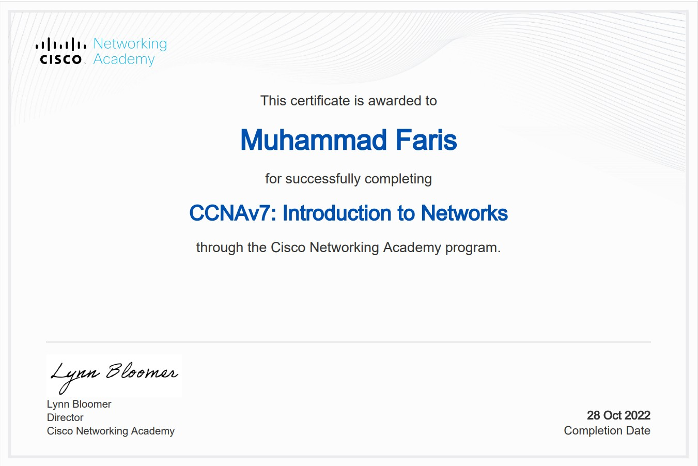
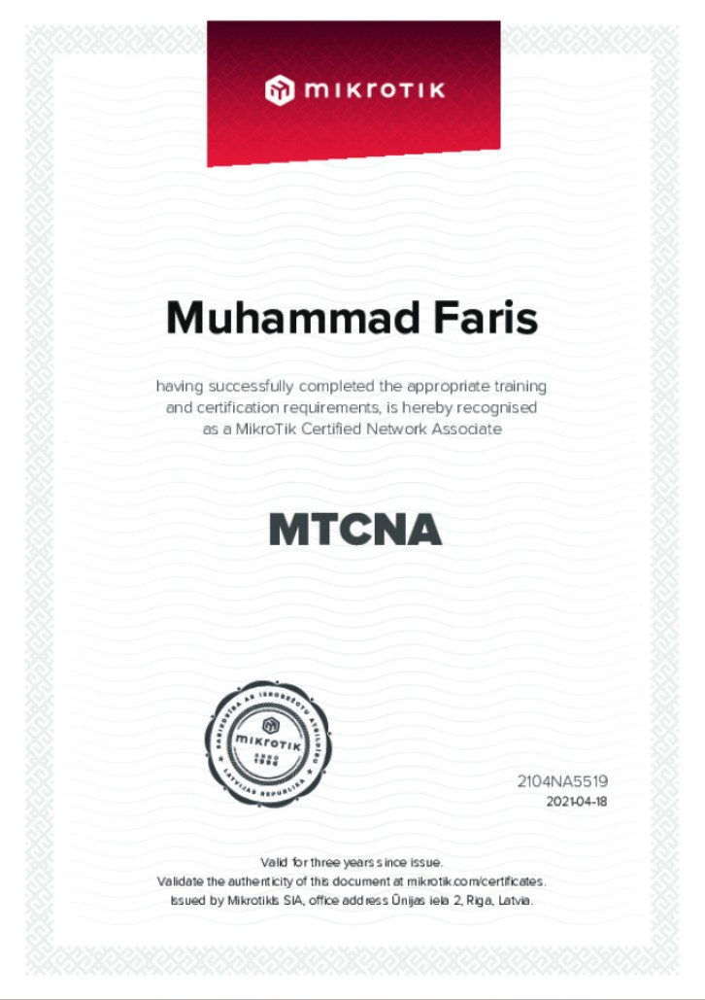
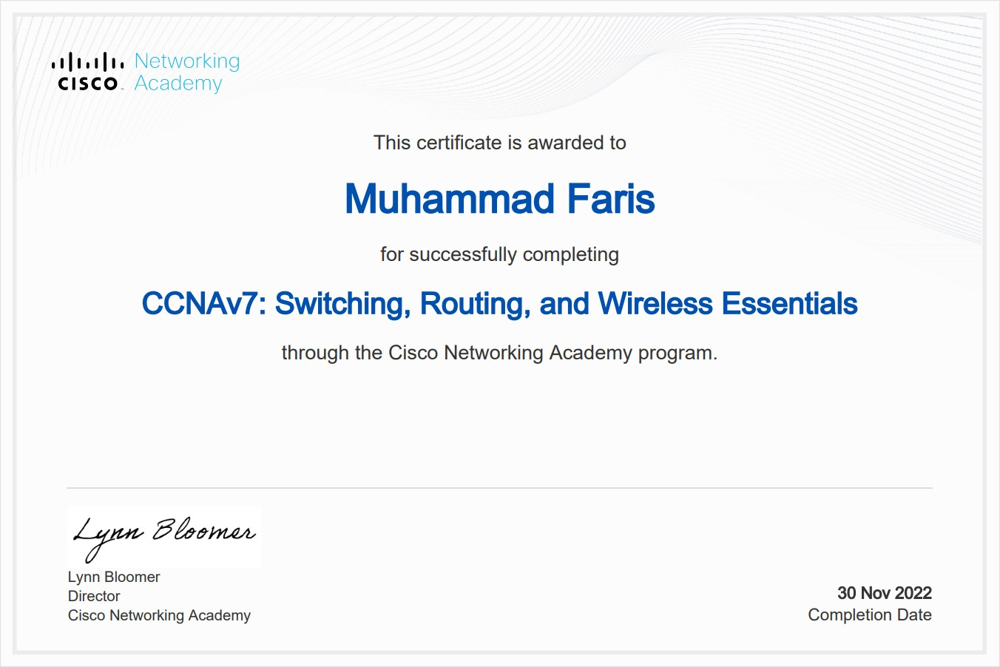

Mahasiswa Informatika dan profesional di bidang keamanan jaringan.
Saya adalah Muhammad Faris, seorang Network Security Engineer yang memiliki minat besar pada bidang Cyber Security, keamanan jaringan, cloud computing, dan teknologi informasi. Saat ini saya juga sedang menempuh pendidikan di Program Studi Informatika.
Saya senang mempelajari teknologi baru, melakukan troubleshooting jaringan, mengelola perangkat keamanan, serta mengembangkan kemampuan di bidang cyber security agar dapat berkarir lebih jauh sebagai profesional keamanan informasi.
| Tahun | Institusi | Jurusan |
|---|---|---|
| 2019 - 2022 | SMK | Teknik Komputer dan Jaringan |
| 2023 - Sekarang | Universitas Siber Asia | Informatika |
| Perusahaan | Posisi | Status |
|---|---|---|
| PT Metrocom Global Solusi | Network Security Engineer | Aktif |




